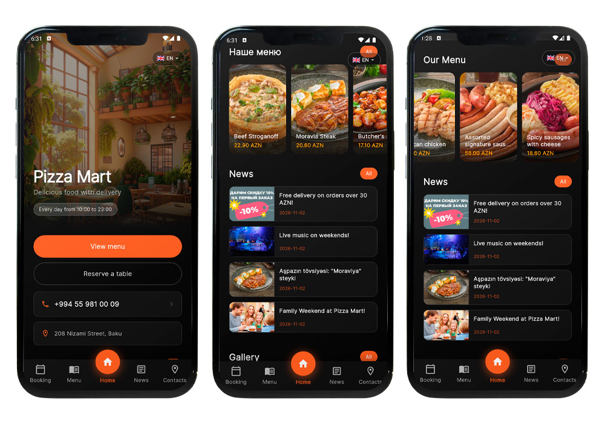

О проекте
Flutter Pizza Mart App
Добро пожаловать в Flutter Pizza Mart App — премиальное решение для автоматизации ресторанного бизнеса. Проект состоит из мобильного приложения (Flutter) и панели администратора (PHP).
Этот продукт идеально подходит для пиццерий, ресторанов и кафе. Вы получаете красивый интерфейс для клиентов и мощную систему управления контентом без необходимости писать код.
Приложение оснащено интуитивно понятной системой бронирования столиков. Как только клиент оставляет заявку, она мгновенно сохраняется в базе данных (Админке), а также отправляется в Telegram или WhatsApp владельца заведения для быстрой обработки.

Возможности проекта
- Мультиязычность: Встроенная поддержка AZ, RU, EN. Возможность добавлять новые языки и переводить интерфейс прямо из админки.
- Темная и светлая темы: Пользователь может переключать дизайн приложения в разделе «Контакты» в один клик.
- Бронирование столов: Удобная форма выбора даты и гостей. Заявки падают в Админку, Telegram-бота и WhatsApp.
- Push-уведомления: Отправка акций и новостей прямо на телефоны пользователей (с поддержкой картинок) из админки.
- Динамическое меню: Категории и блюда с фото, весом, ценой и описанием. Раздел «Все» с новинками.
- Новости и Галерея: Красивые карусели на главной странице для демонстрации интерьера и событий ресторана.
Автор проекта
Структура файлов
Ознакомьтесь со схемой файлов, чтобы понимать, где и что находится.
1. Серверная часть (все файлы лежат в корне домена)
2. Мобильное приложение (Flutter)
Технические требования
Для сервера (Хостинг)
- PHP: version 7.4 or higher (8.1+ recommended).
- MySQL / MariaDB: version 5.7+.
- PHP Extensions: PDO, cURL (for Push), OpenSSL, mbstring.
Для сборки приложения
- Flutter SDK: version 3.0 or higher.
- IDE: Android Studio.
- Firebase: Free Firebase account.
- For iOS: Mac (required), Xcode, Apple Developer account.
Установка сервера и БД
Загрузка файлов на хостинг
Подключитесь к вашему хостингу через FTP (например, FileZilla) или файловый менеджер хостинга (cPanel). Загрузите все файлы проекта в корневую папку вашего домена (например, public_html или создайте папку pizzamart).
Создание базы данных
Зайдите в панель управления хостингом (cPanel/ISPmanager) и найдите раздел «Базы данных MySQL». Создайте новую базу данных, а также нового пользователя. Обязательно запишите: Имя БД, Имя пользователя и Пароль.
Импорт SQL файла
Откройте phpMyAdmin для созданной базы данных. Перейдите на вкладку «Импорт» (Import). Выберите SQL-файл из архива с проектом (обычно он называется u3266738_pizzamart.sql) и нажмите «Вперед» (Go). Таблицы создадутся автоматически.
Настройка config.php
В корне сайта найдите файл config.php. Откройте его через текстовый редактор и впишите данные от вашей базы данных и домен (без слэша на конце!):
Настройка Админки
Первый вход
Откройте в браузере: https://your-domain.com/index.php.
Login: admin
Password: 12345678
Настройка Telegram (для получения броней)
Чтобы бронирования приходили вам в Telegram, выполните 3 шага:
- Откройте Telegram, найдите бота @BotFather. Напишите ему
/newbot. Придумайте имя. Он выдаст вам Token (длинная строка с буквами и цифрами). - Найдите бота @userinfobot и напишите ему
/start. Он покажет ваш Chat ID (число, например 123456789). - Зайдите в админку -> Настройки. Выберите «Каналы получения заказов» -> «Только Telegram». Вставьте Token и Chat ID в поля. Сохраните.
Настройка WhatsApp
В админке -> Настройки -> «Каналы получения заказов» выберите «Только WhatsApp». В поле «Номер WhatsApp» впишите ваш номер в международном формате без плюса (например: 994501234567). При бронировании клиент нажмет «Отправить» и его перекинет в WhatsApp с готовым текстом.
Управление бронями
В разделе «Все брони» вы можете видеть полный список заявок. Кнопка с галочкой подтверждает бронь (статус меняется на «Обработана»), кнопка со стрелкой возвращает в «Новые», а корзина удаляет запись. На главной странице (Дашборд) отображаются только 25 последних заявок для быстрого доступа.
Как добавить новый язык в приложение
Зайдите в раздел Языки. Нажмите «Добавить язык», укажите код (например, tr для турецкого) и название (Türkçe). После этого в разделе Переводы UI вы сможете перевести все тексты приложения (кнопки, меню, ошибки) на этот язык.
Настройка приложения (Flutter)
Открытие проекта
Запустите Android Studio. В стартовом окне нажмите Open (Открыть). Выберите папку App из архива с проектом. Дождитесь окончания загрузки и индексации файлов (внизу будет бежать полоска).
Настройка конфигурации (API)
В левом меню проекта откройте файл lib/config/app_config.dart. Измените ссылки на ваш домен:
Смена ID проекта (Application ID)
По умолчанию проект имеет ID com.example.pizzamart_app. Вы должны поменять его на свой (например, com.myrestaurant.app). Вот подробная инструкция:
- Откройте файл
android/app/build.gradle.kts. - Найдите строки
namespace = "..."иapplicationId = "...". Поменяйте значения на свои (например,com.myrestaurant.app). - В левом меню перейдите в
android/app/src/main/kotlin/com/. - Нажмите правой кнопкой мыши на папку
example, выберите Refactor -> Rename и переименуйте её вmyrestaurant. - Затем зайдите в папку
myrestaurant. Нажмите правой кнопкой на папкуpizzamart_app, выберите Refactor -> Rename и переименуйте вapp. - В верхнем меню Android Studio нажмите Edit -> Find -> Replace in Files (или нажмите
Ctrl+Shift+R). - В верхнее поле введите старый ID:
com.example.pizzamart_app, а в нижнее — новый:com.myrestaurant.app. Нажмите Replace All. - В терминале выполните
flutter cleanиflutter pub get, чтобы Android Studio обновила проект.
Настройка иконки приложения
У вас есть два способа поменять иконку.
Способ 1 (Автоматический, рекомендуемый): В файле pubspec.yaml есть пакет flutter_launcher_icons. Просто замените картинку assets/icon/icon.png на свою (квадратную, 1024x1024px), а затем в терминале выполните команду: flutter pub run flutter_launcher_icons. Пакет сам создаст иконки для всех папок.
Способ 2 (Ручной): Если вы хотите сделать вручную, вам нужно заменить файлы ic_launcher.png в следующих папках (Android):
android/app/src/main/res/mipmap-hdpi/(size 72x72)android/app/src/main/res/mipmap-mdpi/(size 48x48)android/app/src/main/res/mipmap-xhdpi/(size 96x96)android/app/src/main/res/mipmap-xxhdpi/(size 144x144)android/app/src/main/res/mipmap-xxxhdpi/(size 192x192)
Для iOS вам нужно заменить иконки в папке ios/Runner/Assets.xcassets/AppIcon.appiconset/ (там лежат файлы от 20x20 до 1024x1024).
Онбординг (Интро)
Картинки для приветственных экранов лежат в папке assets/intro/. Замените файлы intro1.jpg, intro2.jpg, intro3.jpg на свои (в том же формате и с теми же именами). Тексты для онбординга меняются в админке в разделе «Переводы UI» (ключи onb_title_1 и т.д.).
Язык по умолчанию
Язык, который открывается при первом запуске, берется из админки. Зайдите в админку -> Языки, и нажмите кнопку «Сделать по умолчанию» напротив нужного языка. Приложение при первом запуске автоматически его подхватит и сохранит в память телефона.
Настройка Firebase (Push-уведомления)
Создание проекта
- Зайдите на console.firebase.google.com под своим Google-аккаунтом.
- Нажмите «Создать проект» (Add project). Введите название (например, Pizza Mart).
- Отключите Google Analytics (он вам не нужен для пушей) и нажмите «Создать проект».
Добавление Android-приложения
- На главной странице проекта нажмите иконку Android.
- Внимание: В поле «Android package name» введите ваш новый ID, который вы сделали в предыдущем шаге (например,
com.myrestaurant.app). Он должен совпадать символ в символ! - Придумайте nickname (например, Pizza Mart App).
- Скачайте файл google-services.json и поместите его в папку
android/app/вашего Flutter проекта (замените старый, если он есть).
Ключ для Админки (firebase-key.json)
Чтобы админка могла отправлять пуши, ей нужен ключ доступа.
- В Firebase нажмите на шестеренку (вверху слева) -> «Настройки проекта» (Project settings).
- Перейдите на вкладку «Сервисные аккаунты» (Service accounts).
- Нажмите кнопку «Создать новый закрытый ключ» (Generate new private key). Скачается JSON-файл.
- Переименуйте этот файл в firebase-key.json и загрузите его на ваш сервер (через FTP) в корень сайта (рядом с файлом
notifications.php).
Сборка и релиз (Android & iOS)
Сборка APK для Android
Чтобы приложение можно было установить на телефон или опубликовать в Google Play, его нужно подписать цифровым ключом (JKS).
Step 1: Create JKS Key
Откройте терминал в Android Studio (внизу окна) и выполните команду:
Придумайте пароль и запишите его! На вопросы про имя и город можете отвечать что угодно. Файл upload-keystore.jks появится в корне проекта.
Step 2: Create key.properties
В папке android/ создайте файл key.properties и впишите туда:
Step 3: Compile
В терминале выполните:
Готовый файл появится по пути: build/app/outputs/flutter-apk/app-release.apk.
Сборка для iOS (iPhone)
- Откройте папку
ios/и запустите файлRunner.xcworkspaceв Xcode. - Выберите ваш iPhone в списке устройств (вверху). Зайдите в настройки проекта (Runner -> Signing & Capabilities), выберите вашу команду разработчика (Team).
- Добавьте возможности (Capabilities): Push Notifications и Background Modes (отметьте Remote notifications).
- Для сборки в терминале (на Mac) выполните:
flutter build iosили соберите через Xcode (Product -> Archive).
Решение частых проблем
Не загружаются картинки в приложении
Причина: Неправильный путь в API или отсутствие прав на папку.
Решение: Проверьте, что в config.php константа BASE_URL указана без слэша на конце. Проверьте, что у папки uploads/ на сервере стоят права 755.
Не приходят Push-уведомления
Причина: Ошибка в ключе Firebase или эмулятор не поддерживает пуши.
Решение: Убедитесь, что файл firebase-key.json лежит на сервере. Проверьте, что ID проекта в Firebase и в build.gradle.kts совпадают. Если тестируете на эмуляторе — используйте образ с "Google Play Services".
Ошибка 500 при открытии админки
Причина: Неверные данные от базы данных в config.php.
Решение: Перепроверьте логин, пароль и имя базы данных. Убедитесь, что пользователь БД имеет все права (ALL PRIVILEGES).
Техническая поддержка
Если у вас возникли вопросы, трудности с установкой или вы нашли ошибку в коде, пожалуйста, свяжитесь с автором проекта. При обращении обязательно прикрепляйте скриншоты ошибок и описание проблемы.